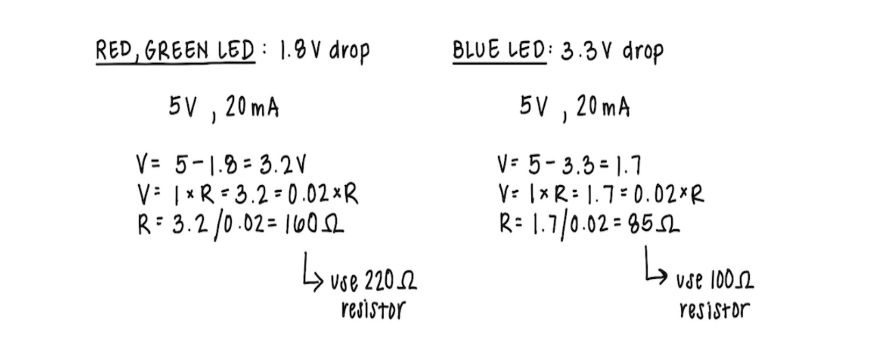

My Schematic
Resistance Values
 Image of my calculations for the resistance needed for my circuit. I used 220 ohm resistors for the red and green LEDs and a 100 ohm resistor for the blue LED.For the pushbuttons, I used 10K ohm resistors because it ensures that the input pins have a stable voltage when the buttons are not pressed, and also limits the current to a safe level when the buttons are pressed.
My Circuit
My Circuit's Operation
Video of my circuit in operation, with pushbuttons and a joystick (input) controlling the webpage sketch and RGB LED (output).My Firmware
// Define Pins
const int shapeButtonPin = 5; // Button 1: press to change shape
const int colorButtonPin = 4; // Button 2: press to change color
const int clearButtonPin = 3; // Button 3: press to clear canvas
const int placeButtonPin = 2; // Joystick Button: use to place shape
const int joyXPin = A0; // Joystick X axis
const int joyYPin = A1; // Joystick Y axis
const int redLED = 11; // PWM pin for red RGB LED
const int greenLED = 10; // PWM pin for green RGB LED
const int blueLED = 9; // PWM pin for blue RGB LED
void setup() {
// begin serial communication
Serial.begin(9600);
// set pushbuttons as inputs
pinMode(shapeButtonPin, INPUT);
pinMode(colorButtonPin, INPUT);
pinMode(clearButtonPin, INPUT);
// set joystick button as input w/ pullup since it is active-low
// 0 = pressed, 1 = not pressed
pinMode(placeButtonPin, INPUT_PULLUP);
// set joystick x and y axis as inputs
pinMode(joyXPin, INPUT);
pinMode(joyYPin, INPUT);
// set RGB LED as outputs
pinMode(redLED, OUTPUT);
pinMode(greenLED, OUTPUT);
pinMode(blueLED, OUTPUT);
// start with LED off
analogWrite(redLED, 0);
analogWrite(greenLED, 0);
analogWrite(blueLED, 0);
}
void loop() {
// Read states of pushbuttons
int shapeVal = digitalRead(shapeButtonPin);
int colorVal = digitalRead(colorButtonPin);
int clearVal = digitalRead(clearButtonPin);
// Read joystick button state (0 = pressed, 1 = not pressed)
int placeVal = digitalRead(placeButtonPin);
// Read joystick x and y axis (range 0-1023)
int joyX = analogRead(joyXPin);
int joyY = analogRead(joyYPin);
// Send all values to a6.js separated by commas
Serial.print(shapeVal);
Serial.print(", ");
Serial.print(colorVal);
Serial.print(", ");
Serial.print(clearVal);
Serial.print(", ");
Serial.print(placeVal); // joystick
Serial.print(", ");
Serial.print(joyX);
Serial.print(", ");
Serial.println(joyY);
// check if a6.js sent any RGB LED values back to Arduino
if (Serial.available() > 0) {
int r = Serial.parseInt();
int g = Serial.parseInt();
int b = Serial.parseInt();
// Remove leftover characters
while (Serial.available() && Serial.peek() == '\n' || Serial.peek() == '\r') {
Serial.read();
}
// Write RGB values to LED (constrain values to 0-255)
analogWrite(redLED, constrain(r, 0, 255));
analogWrite(greenLED, constrain(g, 0, 255));
analogWrite(blueLED, constrain(b, 0, 255));
}
// Small delay between readings
delay(20);
}
My Webpage's p5.js Code
const BAUD_RATE = 9600; // This should match the baud rate in your Arduino sketch
// Declare global variables for serial port and connect button
let port, connectBtn;
let shapeIndex = 0; // track shape currently selected
let lastShapeButton = 0; // store previous state of shape button
let colorIndex = 0; // track color currently selected
let lastColorButton = 0; // store previous state of color button
let lastPlaceButton = 0; // store previous state of joystick place button
let lastClearButton = 0; // store previous state of clear button
let cursorX = 0; // store current x position of joystick
let cursorY = 0; // store current y position of joystick
let placedShapes = []; // Array to store placed shapes
// define colors for drawing on the canvas
let colors = ["red", "orange", "yellow", "green", "blue", "purple", "white"];
let colorsRGB = [
[255, 0, 0], // red
[255, 127, 0], // orange
[255, 255, 0], // yellow
[0, 255, 0], // green
[0, 0, 255], // blue
[125, 0, 255], // purple
[255, 255, 255] // white
];
function setup() {
setupSerial(); // Run our serial setup function (below)
// Create a canvas that is the size of our browser window.
createCanvas(windowWidth, windowHeight);
textFont("system-ui", 50);
textStyle(BOLD);
textAlign(CENTER, CENTER);
// start drawing in the middle
cursorX = 0;
cursorY = 0;
}
function draw() {
// SET UP CANVAS
// Set the background to pink
background("pink");
// Move the origin to the center of the screen
translate(windowWidth/2, windowHeight/2);
fill("coral"); // set fill color for the title
text("let's create!", 0, ((windowHeight / -2) + 50)); // Position text in center of the screen
const portIsOpen = checkPort(); // Check whether the port is open (see checkPort function below)
// only read from the arduino if the port is open
if (portIsOpen) {
let str = port.readUntil("\n"); // Read from the port until the newline
// only process non-empty strings
if (str.length > 0) {
// remove whitespace and split the string into an array with commas
const parts = str.trim().split(",");
// make sure we have at least 6 values (3 pushbuttons, 1 joystick button, 2 joystick axes)
if (parts.length >= 6) {
// parse button states and joystick readings
const shapeButton = Number(parts[0]);
const colorButton = Number(parts[1]);
const clearButton = Number(parts[2]);
let placeJoyButton = Number(parts[3]);
// invert joystick button logic so 1 means "pressed"
if (placeJoyButton === 0) {
placeJoyButton = 1; // pressed
} else {
placeJoyButton = 0; // not pressed
}
const joystickX = Number(parts[4]);
const joystickY = Number(parts[5]);
// Map joystick values to canvas coordinates
cursorX = map(joystickX, 0, 1023, -windowWidth/2 + 50, windowWidth/2 - 50);
cursorY = map(joystickY, 0, 1023, -windowHeight/2 + 50, windowHeight/2 - 50);
// BUTTON 1: Change shape of the object being drawn (on press)
if (shapeButton === 1 && lastShapeButton === 0) {
shapeIndex = (shapeIndex + 1) % 3; // cycle through shapes
}
// update current shape button state
lastShapeButton = shapeButton;
// BUTTON 2: Change color of the object being drawn (on press)
if (colorButton === 1 && lastColorButton === 0) {
colorIndex = (colorIndex + 1) % colors.length; // cycle through colors
sendCurrentColorToArduino(); // send new color to Arduino for RGB LED
}
// update current color button state
lastColorButton = colorButton;
// BUTTON 3: Clear all placed shapes (on press)
if (clearButton === 1 && lastClearButton === 0) {
placedShapes = []; // Clear the array of placed shapes
}
// update current clear button state
lastClearButton = clearButton;
// Joystick button: place shape at current cursor (on press)
if (placeJoyButton === 1 && lastPlaceButton === 0 ) {
// add cursor position, shape, and color to placedShape array
placedShapes.push({x: cursorX, y: cursorY, shape: shapeIndex, color: colorIndex});
}
// update current place button state
lastPlaceButton = placeJoyButton;
}
}
// hide mouse cursor
noCursor();
// remove outter strokes on shapes
noStroke();
// Draw all placed shapes
for (let s of placedShapes) {
fill(colors[s.color]);
drawShape(s.shape, s.x, s.y);
}
// Draw current cursor shape
fill(colors[colorIndex]);
drawShape(shapeIndex, cursorX, cursorY);
}
}
// Helper function to draw shape by index
function drawShape (shapeIndex, x, y) {
const size = 100; // set size for all shapes
// draw a circle when shapeIndex is 0
// draw a square when shapeIndex is 1
// draw a triangle when shapeIndex is 2
if (shapeIndex === 0) {
circle(x, y, size);
} else if (shapeIndex === 1) {
square(x - size/2, y - size/2, size);
} else if (shapeIndex === 2) {
triangle(
x, y - size/2,
x - size/2, y + size/2,
x + size/2, y + size/2);
}
}
// Helper function to send current color to Arduino
function sendCurrentColorToArduino() {
// if the port is not open, exit
if (!port || !port.opened()) return;
// get RGB values for colorIndex
const rgb = colorsRGB[colorIndex];
// create a string to send
const msg = rgb[0] + "," + rgb[1] + "," + rgb[2] + "\n";
// write RGB message to serial port
port.write(msg);
}
// Three helper functions for managing the serial connection.
function setupSerial() {
port = createSerial();
// Check to see if there are any ports we have used previously
let usedPorts = usedSerialPorts();
if (usedPorts.length > 0) {
// If there are ports we've used, open the first one
port.open(usedPorts[0], BAUD_RATE);
}
// create a connect button
connectBtn = createButton("Connect to Arduino");
connectBtn.position(5, 5); // Position the button in the top left of the screen.
connectBtn.mouseClicked(onConnectButtonClicked); // When the button is clicked, run the onConnectButtonClicked function
}
function checkPort() {
if (!port.opened()) {
// If the port is not open, change button text
connectBtn.html("Connect to Arduino");
// Set background to gray
// background("gray");
return false;
} else {
// Otherwise we are connected
connectBtn.html("Disconnect");
return true;
}
}
function onConnectButtonClicked() {
// When the connect button is clicked
if (!port.opened()) {
// If the port is not opened, we open it
port.open(BAUD_RATE);
} else {
// Otherwise, we close it!
port.close();
}
}
Additional Questions
1: Question
Answer
2: Question
Answer
3: Question
Answer
4: Did you use AI tools in completing this assignment?
If yes, please provide details on how/when, as well as a brief reflection.
If no, you can either leave this question blank, or provide other information if you'd like.